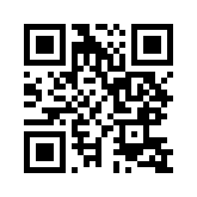

RESUMEN DE INSCRIPCIÓN
INSCRIPCIÓN ECIS
Confirmación y pago
Revisá tus datos, elegí tu medio de pago y completá la inscripción.
- 1Datos
- 2Pago
- 3Comprobante
Editar
MEDIO DE PAGO
Elegí cómo pagar
Elegí una opción. ECIS te guiará hasta obtener tu código y enviar el comprobante.
Importe—
PASO 1 DE 2 · TRANSFERENCIA
Realizá la transferencia
1. Transferí el importe indicado. 2. Verificá el titular. 3. Volvé a ECIS y confirmá la operación para generar tu código.
CuentaUalá
TitularLucas Aranda Amarilla
Aliaslucas.eci
Importe—
Antes de continuar: verificá que el titular sea Lucas Aranda Amarilla. Después de transferir, confirmá la operación para generar tu código ECIS.
PASO 1 DE 2 · MERCADO PAGO / TARJETA
Completá el pago en Mercado Pago
1. Abrí Mercado Pago. 2. Completá el pago. 3. Volvé a ECIS para generar tu código de inscripción.
Importe—
Código ECISSe genera al confirmar el pago
Mantené ECIS abierto.Mercado Pago se abrirá aparte. Al volver a esta pestaña vas a encontrar el paso para confirmar el pago y generar tu código.
Link oficial de Mercado Pago
Podés pagar desde tu cuenta de Mercado Pago o con los medios y tarjetas que la plataforma tenga disponibles.
ECIS dejará preparado el siguiente paso mientras completás el pago en Mercado Pago.
SI ESTÁS DESDE UNA COMPUTADORA

Escaneá con tu celularEl QR dirige al mismo link oficial.Seguridad: los datos de tarjeta se procesan directamente en Mercado Pago; ECIS gestiona únicamente tu inscripción.
PASO 2 DE 2 · MERCADO PAGO / TARJETA
Generá tu código de inscripción
Usá este botón después de completar el pago en Mercado Pago. ECIS registrará la inscripción y mostrará tu código.
2
Pago completado → código ECIS
Confirmá la operación y esperá en esta pantalla hasta que aparezca tu código y las opciones para enviar el comprobante.
PASO FINAL · COMPROBANTE
Tu inscripción quedó registrada
ECIS-0000
Último paso: enviá el comprobante junto con tu código ECIS.
Elegí WhatsApp o correo. El mensaje ya incluye tus datos de inscripción; adjuntá el comprobante antes de enviarlo.
- Tu código de inscripción.
- El comprobante de pago.
ECIS confirmará la participación después de verificar el comprobante y el ingreso del pago. El código permite identificar tu inscripción aunque el pago se haya realizado desde otra cuenta.
Completá este último paso ahora. Abrí WhatsApp o correo, adjuntá el comprobante y enviá el mensaje preparado.